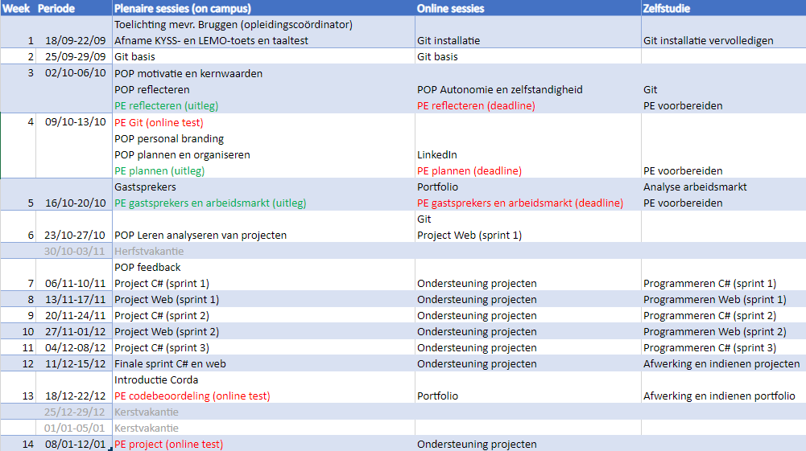
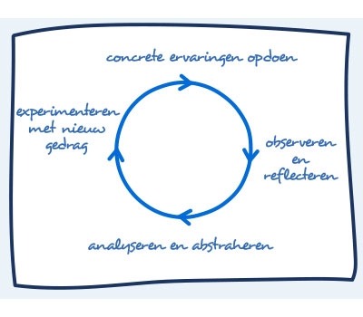
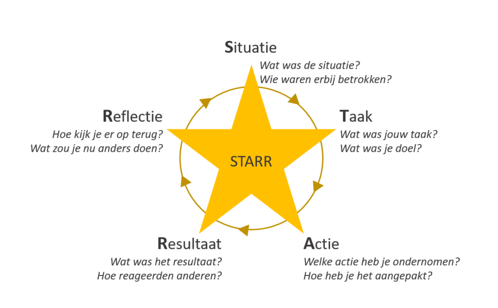
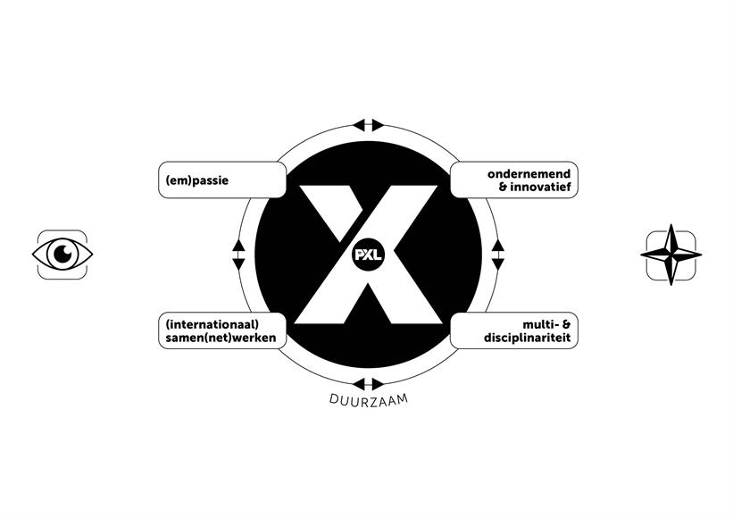

Portfolio
Inleidende tekst
Ik ben Thibau Kerkhofs, student aan de PXL Hasselt met als opleidingstraject Graduaat Programmeren.
Ik ben graag bezig met het designen van websites en het programmeren van kleine projecten in C#.
Op deze pagina vind je mijn portfolio terug.
In mijn portfolio vind je alle projecten en taken
die ik dit jaar (2023-2024) gemaakt heb voor mijn opleiding.
Veel plezier op een reis doorheen mijn academisch jaar.
Logboek
Hier is het logboek / de planning van dit vak.
Ontwikkeling
Waarom kies je voor de opleiding programmeren:
Ik heb voor deze opleiding gekozen omdat ik al graag bezig ben achter mijn computer sinds dat ik klein was.
Ik ben dagdagelijks bezig met mijn computer, dus een opleiding waarbij ik ook achter een computer
voor moet werken is zeker een pluspunt.
Bovendien is mijn peter een programmeur.
Door met hem mee te kijken naar dingen die hij moest doen voor werk ben ik geïnteresseerd
geraakt in die richting van studiekeuze.
De keuze voor dit graduaat komt ook deels voort uit het feit dat
ik de bachelor vorig academiejaar niet heb behaald.
Dus vandaar dat ik nu het graduaat probeer.
Desondanks vind ik het leuk om programmas te maken die nuttig kunnen zijn voor mezelf of simpelweg gewoon
leuk om te maken.
Ik vind het maken en designen van websites ook wel een leuk avontuur om te doen.
Waarom denk je dat dit beroep bij jou past?
Zoals ik net al zei bij de vorige vraag ben ik graag en veel, vrijwel elke dag, bezig met mijn computer of laptop.
Om dat dan om te zetten naar een job zou een ideaal zijn voor mij.
Daarbovenop vind ik de mogelijk om van thuis uit te kunnen werken een zalig vooruitzicht.
Ik ben verder ook geïnteresseerd in de wereld van technologie.
In aansluiting hierop, veel van de technologieën van deze tijd zijn mogelijk door programma’s
die gemaakt zijn door programmeurs.
Bovendien vind ik de vrijwel eindeloze creativiteit van een programmeur een zeer leuk aspect.
Het vermogen om innovatieve oplossingen te bedenken voor problemen die opduiken spreekt mij aan.
Daardoor ben ik ervan overtuigd dat mijn interesse in zowel de technologie als creativiteit me zal
helpen in een job binnen deze sector.
Ontwerper
Waar sta je momenteel?
Ik ben nog steeds in de beginfase van mijn ontwikkeling als ontwerper.
Wat lukt je al goed?
Ik ben in staat om de leerstof toe te passen en mezelf dingen bij te leren indien nodig.
Wat lukt je nog niet?
Het perfect optimaliseren lukt nog niet altijd. Ook voor bij het designen, de kleuren vinden is nog moeilijk.
Voorbeelden uit mijn leven
- Ik heb dit jaar voor dit project een volledige website ontworpen over mezelf. Een soort van portfolio website
Ik heb een volledige website ontworpen over mezelf en dit gedeelte is ontwerper
- Ik heb en website ontworpen voor een vorig project waarbij je vier op een rij moest maken.
Ik heb een volledige website ontworpen voor een vier op een rij game. Hierin heb ik dus ook zelf een vier op een rij bord moeten ontwerpen.
- Ik heb voor meerdere oefeningen van .Net in de xaml code een ontwerp moeten maken wat bruikbaar is voor de applicatie.
Ontwerpen voor een applicatie maken voegt toe aan de rol van een ontwerper.
Programmeur
Waar sta je momenteel?
Ik heb een basiskennis van het programmeren en kan me daar goed in behelpen. Ook kan ik dingen opzoeken en toepassen indien nodig.
Wat lukt je al goed?
Het creatief denken voor een oplossing.
Wat lukt je nog niet?
Het op tijd afwerken van grotere projecten.
Voorbeelden uit mijn leven
- Ik heb .Net oefeningen gemaakt afgelopen jaar.
Tijdens de oefeningen moet je een volledig werkende applicatie samenstellen.
- Ik heb een Cookie Clicker nagebootst voor een project van dit jaar.
Ik heb de code van deze applicatie volledig zelf geschreven en allemaal zelf ontworpen. Hier heb ik constant .Net voor gebruikt.
- Ik heb helpen coderen bij het maken van een vier op een rij spel. De backend van dit spel werkte volledig in C++ en hier heb ik geholpen om dat te maken.
Code voor applicatie zelf bedenken en zelf coderen is wat een programmeur onder andere doet.
Tester
Waar sta je momenteel?
Meer gebruik maken van de ingebouwde debugger en meer debuggen in het algemeen.
Wat lukt je al goed?
Ik kan zelf snel op oplossingen komen als de fout gevonden is.
Wat lukt je nog niet?
Het debuggen van een project verloopt nog moeizaam.
Voorbeelden uit mijn leven
- Ik heb code zelf getest en gedebugged wanneer deze code in kwestie niet werkte gelijk ik het wou om zo de probelemen te zoeken.
Code testen voor een fout te zoeken.
- Ik heb de code van vrienden nagekeken en uitgevoerd om te kijken of deze werkte zoals gewild.
Zelf testen van code voor andere.
- Ik heb in foutieve code gemaakt als oefening door een lector gezocht naar de fout die ervoor zorgde dat het programma niet correct werkte. Tijdens deze les hadden we het over debuggen.
Debuggen is een vorm van testen, namelijk stap voor stap testen en kijken waar de fout zich bevindt.
Communicator / Teamspeler
Waar sta je momenteel?
Werken in teamverband gaat goed maar persoonlijk doe ik dit niet zo graag.
Wat lukt je al goed?
Goed communiceren met andere teamleden en duidelijke afspraken maken binnen het team.
Wat lukt je nog niet?
Het samenwerken zelf ligt mij persoonlijk niet zo goed. Dus vooral de keuze maken om in teamverband te werken indien de keuze er is, lukt nog niet zo goed.
Voorbeelden uit mijn leven
- Tijdens het vier op een rij project wat ik gemaakt heb moest ik samenwerken in teamverband
Samen gewerkt in teamverband.
- Wanneer ik code schrijf die voor sommige minder duidelijk kan zijn zet ik er commentaar bij zodat deze duidelijk wordt voor mijn teamgenoten.
Ik help mijn teamgenoten mijn eigen code beter te begrijpen.
- In vorige jaren heb ik voor het vak Security samen moeten werken in teamverband om zo ongeveer elke maand een nieuwe paper uit te schrijven en een presentatie te geven over de paper.
Werken over een langere periode met meerdere teamgenoten aan een grote opdracht en hierover goed communiceren wie wat doet.
Levenslang lerende IT-professional
Waar sta je momenteel?
Ik ben actief bezig met nieuwe kennissen te zoeken en toe te voegen in mijn arsenaal en deze ook toe te passen in mijn projecten.
Wat lukt je al goed?
Het implementeren van nieuwe kennis in mijn projecten en deze ook goed genoeg begrijpen om deze uit te kunnen leggen.
Wat lukt je nog niet?
Altijd de zelf geïmplementeerde nieuwe kennis vanuit nul terug zelf op te bouwen in een nieuw project. Alhoewel ik de code begrijp kan ik ze nog niet altijd volledig zelf recreëren.
Voorbeelden uit mijn leven
- Ik ben zelf geïnteresseerd in de technologie van vandaag en probeer mezelf ook up-to-date te houden met de laatste nieuwe technologieën.
Onderhouden van kennis over nieuwe technologieën om deze te kunnen toepassen.
- Voor projecten die ik moet maken probeer ik altijd nieuwe dingen die ik nog niet gebruikt of gedaan heb te implementeren in mijn code en ook ervoor zorgen dat ik deze code begrijp.
Het aanleren en implementeren van nieuwe ongeziene aspecten in het coderen is wel van toepassing bij levenslang leren.
- Ik probeer ook altijd wanneer nodig vrienden en familie te helpen met hun IT-gerelateerde problemen .
Door ander mensen te helpen met hun IT-problemen leer je bij bijvoorbeeld code van andere mensen ook een andere manier van denken door na te denken over hoe hun hun code hebben gebruikt. Hier kan je zeker uit leren volgens mij.
Opdrachten
06-10-2023 POP Reflectieopdracht:
In deze opdracht moesten we twee situaties van ons eigen leven kiezen en daar moesten we op gaan reflecteren aan de hand van een reflectiemodel. De twee reflectiemodellen waren: Cyclish reflectiemodel van Kolb en de STARR-methode.
Persoonlijk was het moeilijkste van deze opdracht voor mij het reflecteren zelf. Ik ben hier niet goed in en doe dit ook absoluut niet graag. Ik heb bijgeleerd dat in sommige situaties dit wel nuttig kan zijn en dat ik het eigenlijk meer zou moeten toepassen.
13-10-2023 POP Planningsopdracht:
In deze opdracht moesten we een weekplanning maken voor de komende twee weken.
Veel meer valt er niet te zeggen. Deze taak was redelijk makkelijk buiten het aan de planning houden aspect. Persoonlijk vind ik zo een planning maken en gebruiken nutteloos aangezien alles kan veranderen op elk gegeven moment door omstandigheden.
20-10-2023 POP Gastspreker:
Voor deze opdracht moesten we vragen beantwoorden over een hoorcollege van een gastspreker. In dit hoorcollege kwam de gastspreker uitleg geven over een bedrijf waar verschillende programmeurs in werken. Ook gaf ze uitleg over de meerdere expertises van een programmeur zoals tester, API-programmeur, analist, …
De taak zelf vond ik persoonlijk minder relevant aangezien dit een paar vragen waren waarbij je je mening moet geven over het hoorcollege en of je dingen hebt bijgeleerd. Verder vond ik het wel goed dat er veel uitleg is gegeven over de verschillende expertise mogelijkheden die een programmeur eigenlijk wel niet heeft.
21-12-2023 Project Web CV:
Voor dit project moesten we een site maken als CV van onszelf. Hierin moesten bepaalde elementen aanwezig zijn. De site waar je jezelf nu bevindt is gemaakt omwille van dit project. De site is gemaakt via Webstorm. Ik heb voor deze site HTML, CSS en Javascript gebruikt om hem functioneel te maken.
Deze opdracht vond ik een van de leukere omdat je hier altijd nog iets aan hebt. Je kan deze site daadwerkelijk online zetten gelijk ikzelf gedaan heb en dan kan je bedrijven doorverwijzen naar jouw site voor je CV. Ook is het leuk dat je de site altijd kan veranderen wanneer je wilt aangezien je hem zelf hebt gemaakt en de benodigde skills zelf beheert.
07-01-2023 Project C# Cookie Clicker:
Voor dit project moesten we een applicatie maken in C#. De applicatie in kwestie was een namaakvariant van het befaamde spel Cookie Clicker. In dit project moest jouw applicatie meerdere minimumvereiste hebben. Het thema van het spel mocht je volledig zelf kiezen.
Ik vond deze opdracht ook een van de leukere. Je werd daadwerkelijk uitgedaagd voor sommige vereiste te behalen. Echter vond ik de manier waarop de opdracht gemaakt moest worden minder goed uitgevoerd. Je moest per ID een nieuwe commit maken, ook al waren sommige commits amper 1-2 regels code.
Reflectie
Korte samenvatting
Ik ben dol op computers en wil leren programmeren. Ondanks wat moeilijkheden op school, ben ik nog steeds enthousiast over het maken van programma's en websites. In mijn opleiding ben ik nog een beginnende ontwerper, maar ik leer snel en graag bij.
Als programmeur kan ik creatief denken, maar soms heb ik moeite met het afmaken van grote projecten op een langer termijn aangezien ik meestal te laat begin. Ik heb ervaring van de basis met het programmeren in C# dankzij meerdere projecten die ik gemaakt heb doorheen de jaren. Als tester kan ik snel fouten vinden, maar ik moet nog leren hoe ik systematisch problemen kan oplossen.
Ik ben goed in communiceren en samenwerken met anderen, hoewel ik zelf liever op mijn eentje werk aan een project omwille van vorige ervaringen met groepswerken. Graag blijf ik nieuwe dingen leren en probeer ik deze kennis in mijn projecten toe te passen.
Reflectie over een van de POP-Sessies
De POP-opdracht die ik het leukst vond was de gastspreker opdracht. Bij deze opdracht heb ik veel bijgeleerd over de mogelijkheden die er allemaal zijn als programmeur. Zo kan je niet enkel een programmeur worden die simpelweg de ganse dag code schrijft in dezelfde taal voor jaren aan een stuk maar kan je ook afwisselen en switchen tussen verschillende expertises.
Ik kan deze leerstof het best toepassen in mijn dagelijkse leven als programmeur door mezelf de kans te geven om te groeien en te veranderen van expertise in het geval dat de vorige mij niet lag. Ook heb ik eruit geleerd dat het niet erg is om fouten te maken want zo leer je weer nieuwe dingen bij en word je beter als programmeur.
X-factor
Hoe ziet je X-factor er op dit moment al uit? Welke ervaringen heb je al?
Ik denk dat ik wel zeer gepassioneerd ben met de dingen die ik doe in mijn projecten en ook dat ik ondernemend en innovatief denk over hoe ik mijn projecten maak. Samenwerken kan ik ook maar ik verkies momenteel nog steeds liever alleen te werken.
Hoe zou je je X-factor kunnen vertalen naar de opleiding waarvoor je gekozen hebt?
In het Graduaat Programmeren aan PXL Hasselt komen mijn passie voor computers, creatieve denkwijze en ondernemende instelling volledig tot uiting. Ik ben een enthousiaste ontwerper en programmeur, altijd op zoek naar nieuwe kennis om toe te passen in mijn projecten.
Hoe zou jij je X-factor verder kunnen ontwikkelen?
Door meer samen te werken in teamverband met onbekende mensen en vroeger beginnen aan projecten. Ook moet ik het werk wat sommige projecten vergen niet onderschatten.
